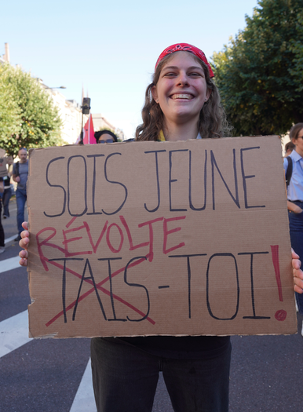

Aimons-nous assez le monde ?
Éducation, transmission et responsabilité : ce qu’Hannah Arendt nous donne encore à penser.

Éducation, transmission et responsabilité : ce qu’Hannah Arendt nous donne encore à penser.
Au lendemain des émeutes du 17 octobre, à Lyon comme ailleurs en France, je ne crois pas que nous soyons obligés d’ajouter une réaction de plus à l’indignation et à la colère qui s’expriment déjà.[5] Sans nier la gravité de ce qui s’est passé ni prétendre avoir toutes les réponses, je propose ici un autre mouvement : prendre le temps de penser ce qui nous relie, ce que nous transmettons et ce que nous pouvons encore construire en commun.
Je viens d’écouter une émission de France Culture diffusée le 10 février 2016 : La crise de l’éducation, avec la philosophe Anne Dalsuet, au micro d’Adèle Van Reeth.[1]
Dix ans plus tard, j’ai le sentiment qu’elle parle directement de ce que nous traversons.
De notre difficulté à nous parler entre générations. De ce que nous transmettons, de ce que nous abandonnons. De cette étrange manière que nous avons parfois d’exiger des jeunes qu’ils inventent l’avenir tout en leur expliquant qu’ils ne comprennent rien.
La pensée d’Hannah Arendt mériterait vraiment de circuler davantage. Elle nous donne de quoi penser notre responsabilité, au-delà des slogans et des réponses toutes faites.
Ce qui suit est ce que cette écoute a mis en mouvement chez moi : des idées que j’en retiens, et les questions qu’elles me donnent envie de prolonger.
La première pourrait sembler paradoxale : pour que du nouveau puisse émerger, encore faut-il rencontrer ce qui était là avant nous.
Nous arrivons dans un monde déjà habité, déjà raconté, déjà transformé par d’autres. Avec ses connaissances, ses œuvres, ses conquêtes, ses violences et ses erreurs. Connaître cet héritage nous donne de quoi nous orienter, choisir ce que nous voulons poursuivre et comprendre ce que nous souhaitons changer.
Arendt distingue d’ailleurs la perte de la tradition de l’oubli du passé : une tradition peut cesser de nous guider sans que nous devions renoncer à connaître ce qui nous précède.[2]
Il y a là quelque chose qui me paraît précieux. Nous pouvons transmettre une histoire sans exiger qu’elle soit répétée. Nous pouvons recevoir un héritage et le discuter.
Mais que se passe-t-il lorsque les plus anciens s’agrippent à ce qu’ils connaissent et que les plus jeunes ne veulent plus entendre parler de ce qui les précède ? Lorsque chacun fait de son époque une forteresse ?
« Vous ne savez plus rien. »
« Vous n’avez rien compris. »
Fin de la conversation.
N’est-ce pas un peu là où nous en sommes ? Je me le demande en regardant la facilité avec laquelle nous nous rangeons dans des camps, y compris à l’intérieur d’une même famille.
Si chacun ne reconnaît comme valable que son propre monde, à partir de quoi pourrions-nous encore en construire un ensemble ?
Il faut bien qu’à un moment quelque chose puisse circuler : une expérience, un savoir, un récit, une question. Et que celui qui transmet accepte aussi d’entendre ce que l’autre en fait.
Cela suppose de rester à sa place d’adulte.
Chez Arendt, l’autorité éducative engage précisément la responsabilité des adultes envers le monde dans lequel ils accueillent les enfants. Renoncer à cette responsabilité, c’est les laisser se débrouiller avec un monde dont personne ne répond plus devant eux.[3]
Cette idée me travaille, parce que nous pouvons nous retirer de la relation de plusieurs manières.
Il y a le retrait agacé :
« Puisque vous savez tout, faites comme vous voulez. »
Et il y a la parole qui ferme toute discussion :
« C’est comme ça et pas autrement. Je sais mieux que toi, je suis plus vieux. »
L’ancienneté est précieuse. Elle ne donne pas un abonnement premium à la vérité.
Entre ces deux attitudes, il y a pourtant une présence adulte à tenir : transmettre ce que l’on sait, poser des limites, expliquer, écouter, reconnaître aussi ce que l’on ignore. Supporter de ne pas être approuvé immédiatement. Accepter qu’une question vienne déranger notre certitude.
Face à un cadre qui ne laisse aucune place à la pensée, certains apprennent à se conformer. Ils cherchent la bonne réponse, celle qui évitera les ennuis. D’autres s’opposent, transgressent, veulent renverser la table. Ces réactions ont des histoires et des causes multiples ; elles devraient aussi nous inviter à regarder la place que nous leur proposons.
Quelle possibilité laissons-nous à un jeune d’être en désaccord tout en restant en relation ?
Peut-il discuter une règle ? Dire qu’il ne comprend pas ? Nous apprendre quelque chose ? Ou faut-il qu’il choisisse entre obéir et rompre ?
Je crois que notre responsabilité se joue beaucoup dans cet espace.
Elle se joue aussi dans ce que nous attendons de l’éducation.
Apprendre à survivre dans le monde tel qu’il est, c’est déjà nécessaire. Il faut pouvoir comprendre son environnement, travailler, se nourrir, trouver sa place parmi les autres.
Mais est-ce vraiment tout ce que nous souhaitons pour les êtres humains ?
J’aimerais que nous puissions leur souhaiter davantage : découvrir ce qui les anime, développer leur pensée, rencontrer leurs capacités, créer, aimer, contribuer. Trouver une manière singulière d’habiter le monde.
Cela demande du temps.
Du temps pour apprendre. Pour essayer et se tromper. Pour qu’une expérience prenne sens. Pour relier ce que l’on connaît à ce que l’on vit.
Et nous n’avons pas tous le même rythme.
Une consigne comprise très vite par l’un demandera plusieurs chemins à l’autre. Une capacité se montrera tôt ici, beaucoup plus tard ailleurs. Certains ont besoin de manipuler, d’autres de parler, de regarder ou de recommencer.
Je m’interroge sur la place que nous faisons à ces différences lorsque nous attendons de chacun qu’il franchisse les mêmes étapes au même moment. À force de mesurer la vitesse, nous risquons de perdre de vue ce qui est en train de se construire.
Dans mon parcours en éducation populaire, dans le théâtre et dans l’accompagnement, cette question revient : quelles conditions permettent à quelqu’un de prendre sa place, d’oser une parole, de découvrir une possibilité qu’il ne se connaissait pas ?
Il y faut des connaissances, de l’exigence, des rencontres. Il y faut aussi suffisamment de sécurité et de temps pour tenter quelque chose.
Et cela m’amène à un sujet plus délicat : l’égalité.
L’égalité en dignité et en droits me paraît essentielle. Elle peut tout à fait coexister avec la reconnaissance de nos différences de savoir, de compétence et de talent.
Tout ne se vaut pas. Une opinion ne devient pas une connaissance parce qu’elle est exprimée avec assurance. Une compétence demande du travail. Une expérience peut donner à quelqu’un une compréhension que je n’ai pas.
J’ai le sentiment que, lorsque le souci d’égalité devient le refus de reconnaître toute différence, nous risquons un nivellement par le bas. Comme si ce qui dépasse menaçait nécessairement les autres.
Si nous souhaitons que chacun puisse se déployer dans sa singularité, il faut bien accepter que certaines personnes excellent dans un domaine. Peut-être avons-nous même besoin d’élites, au sens de personnes dont les connaissances, la maîtrise ou la créativité nous permettent collectivement d’aller plus loin.
Le mot crispe. Je le comprends. Il charrie aussi l’entre-soi, les privilèges et les places qui se transmettent entre gens bien nés.
Mais la question mérite d’être précisée : comment accède-t-on à ces positions ? Qui en reste écarté ? Et surtout, qu’en fait-on ?
Met-on son savoir en circulation ? Permet-on à d’autres de progresser ? Accepte-t-on d’être questionné ? Ou utilise-t-on sa position pour verrouiller les portes derrière soi ?
Je peux reconnaître qu’une personne sait beaucoup plus de choses que moi dans un domaine sans lui accorder davantage de valeur humaine. Je peux apprendre d’elle et conserver mon jugement.
Une exigence partagée pourrait justement consister à donner à chacun les moyens de développer ses capacités, y compris lorsque cela demande des chemins et des soutiens différents.
Reconnaître ce qui nous distingue ne devrait pas nous empêcher de faire du commun.
À condition de se rappeler que ce monde nous est confié pour un temps.
J’approche de la cinquantaine. Un jeune de vingt ans a, en principe, davantage d’années devant lui que moi. Il vivra plus longtemps avec les conséquences de ce que nous décidons aujourd’hui.
Cette pensée toute simple remet quelques choses à leur place.
De quel droit mon expérience deviendrait-elle un titre de propriété sur son avenir ?
J’ai des choses à transmettre. J’ai aussi à entendre ce que celles et ceux qui arrivent voient, désirent et refusent. Ce monde leur appartient autant qu’à nous. Leur manière de le transformer nous échappera en partie.
Et il va falloir le supporter.
Avec un peu d’humour, de préférence.
Je me demande parfois si notre agacement envers la jeunesse ne contient pas une part de chagrin. Ce qu’elle s’autorise nous rappelle-t-il ce que nous nous sommes interdit ? Ses possibles viennent-ils frotter contre nos renoncements ? Ses critiques nous obligent-elles à regarder ce que nous avons accepté sans trop le discuter ?
Ce n’est qu’une question. Mais avant de conclure que « les jeunes ne respectent plus rien », elle mérite peut-être un petit détour par nous-mêmes.
Je glisse ici https://www.facebook.com/share/v/1Q6ApQKzUa/" target="_blank" rel="noopener">une parenthèse pour rire. Parce que nous pouvons aussi desserrer un peu nos certitudes en riant.
Et puis il y a la musique.
Dans les références musicales de l’émission figure You Don’t Learn That in School, de Nat King Cole. On pourrait traduire le titre par : « Ça ne s’apprend pas à l’école. »[1]
J’aime la question que ce titre ouvre.
Nous apprenons dans les livres, les cours, les savoirs transmis. Nous apprenons aussi dans les liens, les essais, les désaccords, les moments où quelqu’un prend le temps de nous montrer.
Une chanson peut devenir un souvenir partagé. Un texte peut nous donner des mots pour une expérience jusque-là solitaire. Une œuvre peut offrir un endroit où nous rencontrer, même lorsque nous ne sommes pas d’accord.
Alors, comment tisser du commun si nous ne partons jamais de quelque chose que nous pouvons partager ?
Ce commun peut être modeste au départ : une histoire que l’on écoute, une connaissance que l’on examine, une activité que l’on essaie ensemble, une question à laquelle personne n’a encore répondu.
Il faut pouvoir y entrer avec ses différences. Et trouver assez de repères pour que la rencontre soit possible.
Arendt distingue le domaine de l’éducation de celui de la vie politique entre adultes.[4] Je prolonge pour ma part cette réflexion ainsi : notre manière d’accueillir et d’accompagner les jeunes engage la possibilité d’un monde commun. Nous ne pouvons pas leur demander de le faire surgir de rien, puis leur reprocher de ne pas savoir s’y prendre.
Nous avons à leur transmettre de quoi commencer. À leur donner accès aux savoirs, aux œuvres, aux histoires, aux désaccords qui nous ont précédés. À leur faire une place réelle dans la conversation.
Et à accepter qu’ils se lancent dans des projets dont nous n’avions aucune idée.
Je reviens alors à ces mots d’Hannah Arendt :
« L’éducation est le point où se décide si nous aimons assez le monde pour en assumer la responsabilité. »[4]
Cette phrase me touche parce qu’elle nous remet au travail, nous, les adultes.
Aimons-nous assez le monde pour prendre le temps de le connaître et de le transmettre ?
Aimons-nous assez celles et ceux qui arrivent pour les accompagner, puis leur laisser une place qui ne soit pas seulement celle que nous avions choisie pour eux ?
Aimons-nous assez le monde pour qu’il puisse continuer après nous, autrement que nous l’avions imaginé ?
Émilie Treynet — Les Carnets de Tout part de toi
Repères et liens
[1] France Culture, « Hannah Arendt, la crise de l’éducation », émission du 10 février 2016, avec Anne Dalsuet, présentée par Adèle Van Reeth. La notice de l’émission confirme aussi la référence à Nat King Cole.
Notice de l’émission : https://mediatheque.macon.fr/Default/detailstatic.aspx?RSC_BASE=RADIOFRANCE&RSC_DOCID=2016C12410S0041&TITLE=hannah-arendt-la-crise-de-l-education&_lg=en-US
[2] Hannah Arendt, « La crise de la culture », extrait sur la tradition et le passé, reproduit par Politique Autrement : https://www.politique-autrement.org/glossary/arendt-hannah-la-disparition-de-la-tradition-nimplique-pas-loubli-du-passehannah-la-disparition-de-la-tradition-nimplique-pas-loubli-du-passe/
[3] Hannah Arendt, « La crise de l’éducation », dans La Crise de la culture, extrait sur la responsabilité des adultes, reproduit par Politique Autrement : https://www.politique-autrement.org/glossary/arendt-hannah-la-crise-de-leducation/
[4] Hannah Arendt, « La crise de l’éducation », dans La Crise de la culture, extrait « Éducation et crise de la tradition », reproduit par Politique Autrement. La citation finale et la distinction entre éducation et politique sont tirées de cet extrait : https://www.politique-autrement.org/glossary/arendt-hannah-education-et-crise-de-la-tradition/
[5] Événements du 17 octobre 2026 : LyonMag, « Manifestation du 17 octobre à Lyon : un niveau de violence inédit selon le préfet du Rhône », et Associated Press, « Clashes, fires and looting break out as protesters rally across France, joining students ».